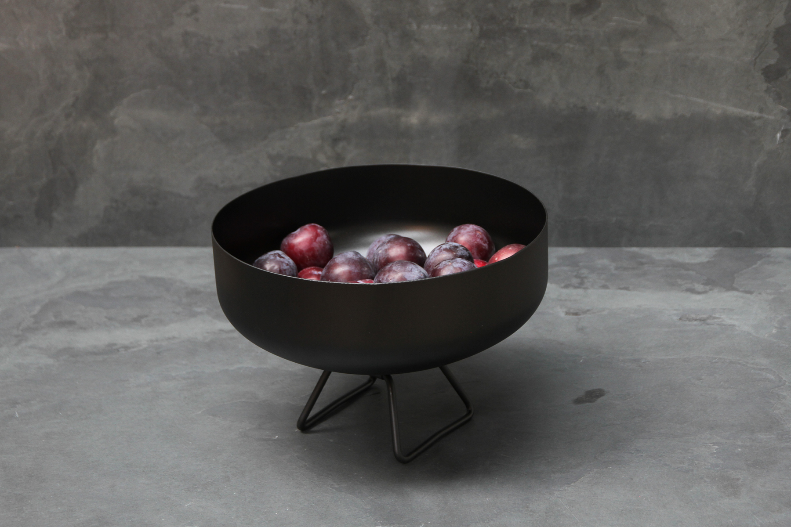
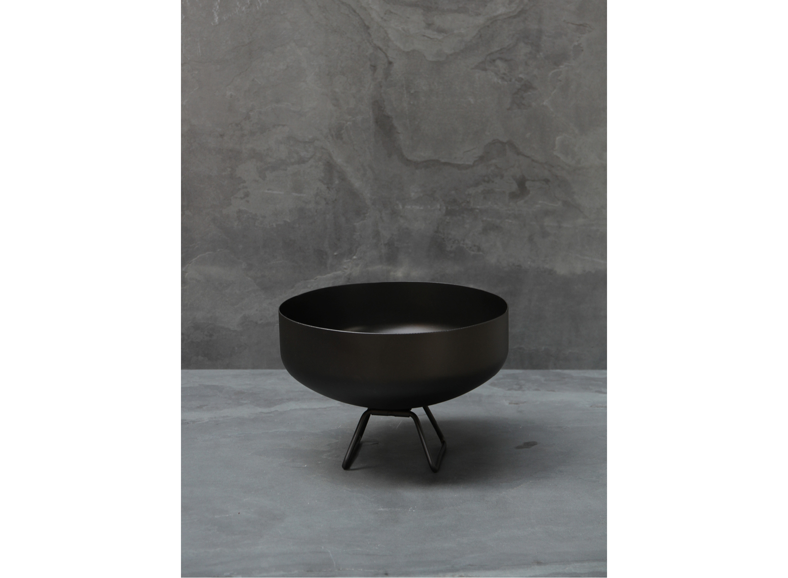
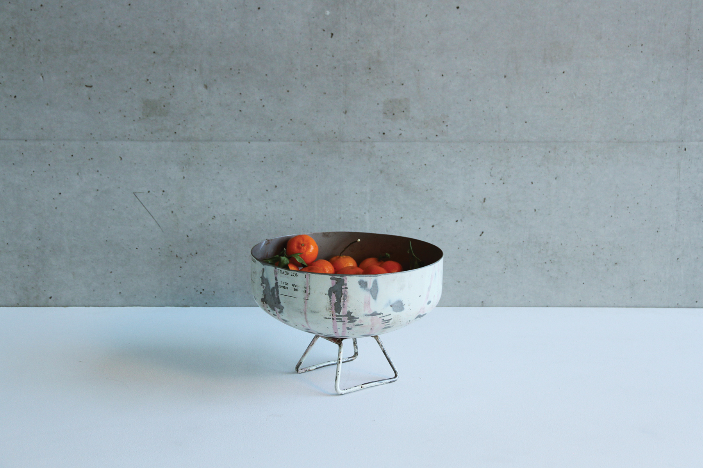

- 
- 
- 
| fruitschaal | ||||
|---|---|---|---|---|
| storagespace | 90% staal 10% hout |
|||
Het ontwerp Fruitschaal is door zijn industriële look en 100% gerecycleerde body zowaar de puurste creatie uit de
collectie. Ze ontstond uit de idee om de afvalberg van Stuf zo klein mogelijk te houden. Zo wordt er altijd over nagedacht om zelfs resten van herbestemde objecten opnieuw in de collectie te integreren. Als basis voor Fruitschaal werd daarom beslist de ongebruikte onderdelen van afgedankte stalen lijmvaten te gebruiken. Deze lijmvaten dienen tevens als basis voor andere creaties uit de collectie, HOAT & OAT. Terwijl de onderkanten van de lijmvaten in het Krukje worden verwerkt, worden de bovenkanten 180° gedraaid waardoor het gehalveerde vat de functie bekomt van een schaal. De Fruitschaal bestaat in twee versies, een chemisch gezwarte stalen kuip en een ruw witte, beiden met een kleurloze beschermende waslaag. De Fruitschaal kan tevens verkregen worden met een deksel. Keuze uit: leisteen, padoek of gerookte eik. |
Alle stalen onderdelen van uit onze collectie worden chemisch gezwart. Chemisch zwarten, ook wel bruneren genoemd, is een chemisch proces waarbij het staaloppervlak wordt omgezet in een ijzeroxidelaag. Het proces bestaat eruit het staal onder te dompelen in een oxiderende alkalische vloeistof bestaande uit een mengsel van zouten.
Deze toepassing is niet alleen milieuvriendelijk, door de diepzwarte kleur van de ijzeroxidelaag, krijgt het staal ook een unieke uitstraling. De keuze voor eikenhout past volledig binnen de filosofie van stuf. Enerzijds betreft het een lokale, sterke houtsoort die bekend staat om zijn duurzaamheid, anderzijds is het één van de weinige houtsoorten waarop we de techniek van het roken konden toepassen. Roken biedt het voordeel dat het hout in sneltempo in een natuurlijk verouderingsproces terechtkomt, waardoor verdere veroudering wordt tegengegaan |
 Ontworpen en gemaakt in België. Kan op maat besteld worden. |
||